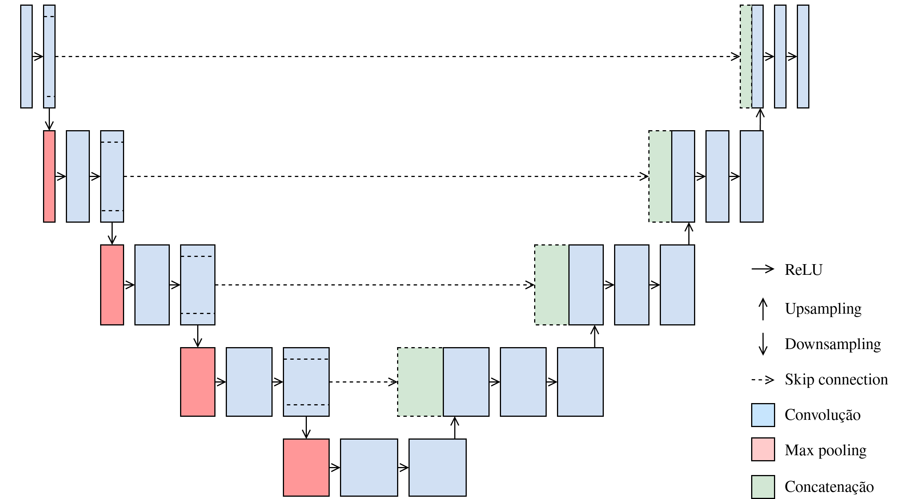
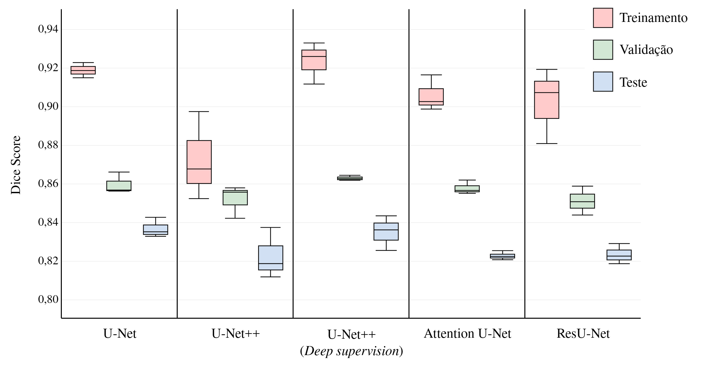
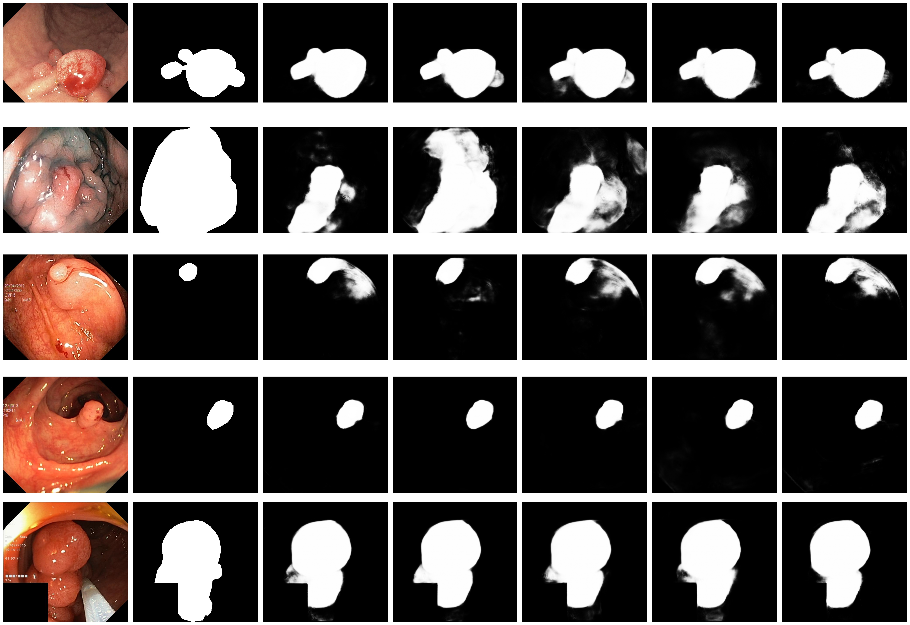

Análise comparativa de arquiteturas U-Net para segmentação de pólipo em colonoscopia
Introdução
O câncer colorretal é um dos tumores mais prevalentes no mundo, correspondendo a cerca de 10% dos casos e mais de 930 mil mortes anuais1. A progressão de pólipos adenomatosos para carcinoma costuma levar entre 10 e 15 anos, oferecendo uma janela ampla para prevenção via detecção e remoção precoce2; contudo, a taxa de detecção durante a realização de colonoscopias varia amplamente, sobretudo por diferenças de morfologia dos pólipos3.
Neste contexto, a ciência de dados, particularmente o aprendizado de máquina, muito tem a oferecer. A segmentação de pólipos pode ser tratada como um problema de classificação pixel a pixel. Tal trabalho é desafiador devido à heterogeneidade morfológica das lesões, baixo contraste entre tecido do pólipo e mucosa adjacente, e condições de iluminação variáveis na endoscopia; entretanto, avanços em redes neurais convolucionais têm impulsionado melhorias significativas na precisão de segmentação, superando métodos tradicionais baseados em atributos manuais4 5.
Neste cenário, U-Net se estabelece como o estado-da-arte para tal tarefa através de um esquema codificador-decodificador com skip connections6.

Suas limitações, porém, motivaram variantes que visam melhorar a fusão de representações e a seletividade de características. Este trabalho realiza comparações sistemáticas sob condições experimentais controladas, comparando cinco arquiteturas na segmentação de pólipos usando o conjunto Kvasir-SEG7.
Trabalhos Relacionados
A segmentação automatizada de pólipos evoluiu significativamente desde métodos clássicos até arquiteturas profundas especializadas. Abordagens iniciais baseavam-se em características manuais e técnicas tradicionais de visão computacional. Bernal et al.3 propuseram mapas WM-DOVA combinando informação de intensidade e forma, enquanto Tajbakhsh et al.5 empregaram redes convolucionais rasas com características contextuais para detecção em vídeos de colonoscopia.
A introdução de redes totalmente convolucionais (FCN)8 revolucionou a segmentação semântica ao eliminar camadas densas finais e permitir predições pixel a pixel. Brandão et al.4 adaptaram FCNs para segmentação de pólipos, demonstrando superioridade sobre métodos tradicionais mas ainda enfrentando dificuldades com bordas imprecisas e variações morfológicas. A arquitetura U-Net6, com seu paradigma codificador-decodificador e skip connections, tornou-se referência para segmentação biomédica ao preservar informação espacial em múltiplas escalas.

Diversas extensões da U-Net têm sido propostas para segmentação de pólipos. Zhou et al.9 introduziram conexões densas aninhadas para reduzir lacunas semânticas, enquanto Oktay et al.10 incorporaram mecanismos de atenção espacial. Jha et al.11 propuseram DoubleU-Net, combinando dois caminhos codificador-decodificador com blocos ASPP (Atrous Spatial Pyramid Pooling), alcançando Dice score de 82,3% no Kvasir-SEG.
Abordagens recentes exploram mecanismos sofisticados de atenção e agregação multi-escala. Fan et al.12 desenvolveram PraNet com atenção reversa paralela, reportando 89,8% de Dice no Kvasir-SEG. Fang et al.13 propuseram agregação seletiva de características com restrições de área-fronteira, enquanto Zhang et al.14 introduziram seleção adaptativa de contexto para lidar com variabilidade morfológica. Srivastava et al.15 propuseram MSRF-Net com fusão residual multi-escala.
Trabalhos mais recentes investigam transformers para segmentação médica. Valanarasu et al.16 introduziram Medical Transformer com atenção axial, demonstrando competitividade com CNNs. Huang et al.17 propuseram HarDNet-MSEG, alcançando Dice superior a 90% com 86 FPS, equilibrando precisão e eficiência computacional.
Apesar dos avanços, comparações diretas são dificultadas por variações metodológicas: diferentes particionamentos de dados, estratégias de augmentação, funções de perda e hiperparâmetros. Muitos trabalhos reportam resultados em múltiplos conjuntos mas carecem de análise estatística rigorosa. Este estudo aborda essas lacunas através de comparação sistemática de cinco arquiteturas U-Net fundamentais sob condições experimentais controladas, com múltiplas sementes para análise de variância, fornecendo benchmark reproduzível para o domínio.
Fundamentos Teóricos de Arquiteturas U-Net
A U-Net estabelece o paradigma codificador-decodificador com skip connections para segmentação biomédica6. O codificador captura informação semântica multi-escala através de convoluções e pooling sucessivos, enquanto skip connections concatenam características do codificador ao decodificador, preservando detalhes espaciais.
Seja \(x\in\mathbb{R}^{H\times W\times C}\) uma imagem de entrada e \(y\in{{0,1}}^{H\times W}\) sua máscara binária de referência. A rede implementa um mapeamento \(f:\mathbb{R}^{H\times W\times C}\rightarrow[0,1]^{H\times W}\) cujo threshold em 0,5 produz \(\hat{y}\in{{0,1}}^{H\times W}\). Em cada nível \(l\) do codificador, o número de canais (largura) segue \(c_l = c_0\cdot 2^{l}\).
U-Net++: Conexões Densas Aninhadas
A U-Net++ aborda a lacuna semântica da U-Net através de blocos convolucionais aninhados9. Na U-Net, skip connections concatenam características semanticamente distantes (baixo nível no codificador, alto nível no decodificador). A U-Net++ resolve isso conectando, de maneira gradual, características através de caminhos densos. Cada nó \(\mathbf{X}^{i,j}\) é
\[ \begin{aligned} \mathbf{X}^{i,j} = \begin{cases} \mathcal{H}(\mathbf{X}^{i,j-1}), & j = 0 \\ \mathcal{H}\left(\left[\left[\mathbf{X}^{i,k}\right]_{k=0}^{j-1}, \mathcal{U}(\mathbf{X}^{i+1,j-1})\right]\right), & j > 0, \end{cases} \end{aligned} \]
onde \(i\) indexa resolução, \(j\) densidade de conexões, \(\mathcal{H}(\cdot)\) convolução, \(\mathcal{U}(\cdot)\) upsampling, \([[\cdot]]\) concatenação. Isso reduz progressivamente a lacuna semântica através de transformações sucessivas.
Além de U-Net++, neste trabalho adotamos ainda uma versão com deep supervision, que adiciona supervisão multi-escala \(\mathcal{L}_{\text{total}} = \sum_{j=1}^{J} \omega_j \mathcal{L}(\mathbf{y}, \mathbf{\hat{y}}^{(j)})\), mitigando gradientes evanescentes e acelerando convergência.
Attention U-Net: Mecanismos de Atenção Espacial
A Attention U-Net incorpora attention gates que ponderam espacialmente características antes da concatenação10, suprimindo informações irrelevantes transmitidas pelas skip connections. Dado \(\mathbf{x}\) do codificador e sinal de gating \(\mathbf{g}\) do decodificador, os coeficientes de atenção são
\[ \hat{\mathbf{x}} = \sigma_2\left(\psi^T \sigma_1(\mathbf{W}_x^T \mathbf{x} + \mathbf{W}_g^T \mathbf{g})\right) \odot \mathbf{x} \]
onde \(\sigma_1\) e \(\sigma_2\) são ReLU e sigmoide, respectivamente, permitindo suprimir regiões irrelevantes e enfatizar estruturas salientes.
ResU-Net: Conexões Residuais para Redes Mais Profundas
A ResU-Net integra a arquitetura U-Net com blocos residuais inspirados em ResNet18, abordando a degradação de desempenho que ocorre ao treinar redes muito profundas19. Enquanto a U-Net padrão utiliza blocos de convolução dupla, a ResU-Net substitui esses blocos por blocos residuais que implementam conexões de identidade. Um bloco residual aprende uma função residual \(\mathcal{F}(\mathbf{x})\) em vez do mapeamento direto desejado \(\mathcal{H}(\mathbf{x})\), através da conexão de atalho
\[ \mathbf{y} = \mathcal{F}(\mathbf{x}, {W_i}) + \mathbf{x}, \]
onde \(\mathbf{x}\) e \(\mathbf{y}\) são vetores de entrada e saída, e \(\mathcal{F}(\mathbf{x}, {W_i})\) representa a transformação residual a ser aprendida. Esta arquitetura facilita treinamento de redes mais profundas ao permitir que o modelo aprenda transformações incrementais em vez de mapeamentos completos, resultando em melhor propagação de gradientes e potencial para capturar representações mais ricas.
Metodologia
Conjunto de Dados e Pré-processamento
O Kvasir-SEG7 contém 1.000 imagens de colonoscopia com máscaras de segmentação pixel a pixel e caixas delimitadoras, cobrindo ampla diversidade de tamanho e forma de pólipos. As imagens apresentam resoluções variadas (de 332\(\times\)487 a 1920\(\times\)1072), e são redimensionadas para 256\(\times\)256 pixels e normalizadas com estatísticas ImageNet. O particionamento considera 80% das imagens para treinamento, 10% para validação, 10% para teste.
Implementação e Treinamento
Nosso estudo examina cinco variantes da U-Net: U-Net padrão (blocos de dupla convolução 3\(\times\)3, batch normalization, ReLU, cinco níveis com \({64, 128, 256, 512, 512}\) canais); U-Net++ (caminhos densos aninhados, com e sem supervisão profunda); Attention U-Net (com attention gates); ResU-Net (blocos residuais com conexões de identidade, cinco níveis com \({64, 128, 256, 512, 512}\) canais).
Todos os modelos foram treinados por no máximo 100 épocas, com batch size 8, usando otimizador AdamW (taxa de aprendizado inicial \(10^{-4}\), weight decay \(10^{-5}\)). O agendamento de taxa de aprendizado utilizou 5 épocas de warmup seguidas de redução no platô (fator 0,5, paciência 5, taxa mínima \(10^{-6}\)). A função de perda combinada é \(\mathcal{L} = 0{,}4 \mathcal{L}_{\text{BCE}} + 0{,}6 \mathcal{L}_{\text{Dice}}\). Augmentação contém flips, rotação, transformações afins, color jitter, desfoque Gaussiano. O treinamento adota early stopping monitorando o Dice score de validação com paciência de 10 épocas, interrompendo quando não há melhoria. Para garantir reprodutibilidade, cada arquitetura foi treinada com três sementes aleatórias (42, 123, 456).
Métricas de Avaliação e Análise Estatística
Nosso arcabouço de avaliação emprega cinco métricas complementares que capturam diferentes aspectos do desempenho de segmentação, fornecendo uma apreciação abrangente das capacidades do modelo em diversos cenários clínicos, utilizando informações de falsos negativos (FN), falsos positivos (FP), positivos verdadeiros (TP) e negativos verdadeiros (TN).
O Coeficiente de Similaridade de Dice (Dice score) mede a sobreposição regional entre as segmentações predita \(P\) e verdadeira \(V\) — para segmentação binária por pixel, o Dice score equivale ao F1 score. É obtida com
\[ \frac{2 \mid P \cap V \mid}{\mid P \mid + \mid V \mid}. \]
Já o Índice de Jaccard (Intersection over Union, ou IoU) fornece uma medida alternativa de sobreposição a partir de
\[ \frac{\mid P \cap V \mid}{\mid P \cup V \mid}. \]
Além dessas métricas principais, calculamos sensibilidade, que mede a capacidade do modelo de detectar pixels de pólipo; especificidade, que quantifica a proporção de pixels não-pólipo corretamente identificados; e precisão, que avalia a proporção de predições positivas que são corretas.
Resultados
A U-Net padrão alcançou o melhor desempenho geral (Dice: 83,66\(\pm\)0,52%, IoU: 75,65\(\pm\)0,29%), demonstrando notável consistência com o menor desvio padrão entre as três sementes. U-Net++ com supervisão profunda obteve desempenho comparável (Dice: 83,48\(\pm\)0,89%), apresentando a maior sensibilidade (89,39\(\pm\)0,88%), indicando capacidade superior para detectar pixels de pólipo.
| Arquitetura | Dice (%) | IoU (%) | Sensib. (%) | Especif. (%) | Precisão (%) |
|---|---|---|---|---|---|
| U-Net | 83,66\(\pm\)0,52 | 75,65\(\pm\)0,29 | 88,36\(\pm\)0,83 | 97,28\(\pm\)0,22 | 84,76\(\pm\)0,27 |
| U-Net++ | 82,24\(\pm\)1,33 | 73,64\(\pm\)1,46 | 87,52\(\pm\)2,51 | 97,22\(\pm\)0,57 | 83,24\(\pm\)1,03 |
| U-Net++ (DS) | 83,48\(\pm\)0,89 | 75,46\(\pm\)1,03 | 89,39\(\pm\)0,88 | 97,13\(\pm\)0,30 | 83,42\(\pm\)1,09 |
| Attention U-Net | 82,24\(\pm\)0,23 | 73,63\(\pm\)0,16 | 88,74\(\pm\)0,67 | 96,82\(\pm\)0,06 | 82,01\(\pm\)0,12 |
| ResU-Net | 82,43\(\pm\)0,52 | 73,85\(\pm\)0,88 | 86,60\(\pm\)0,63 | 97,52\(\pm\)0,28 | 84,35\(\pm\)1,06 |
ResU-Net, incorporando conexões residuais, obteve Dice de 82,43\(\pm\)0,52% e destacou-se com a maior especificidade (97,52\(\pm\)0,28%), indicando excelente capacidade de rejeitar falsas detecções. U-Net++ padrão e Attention U-Net apresentaram desempenho similar (Dice: 82,24%), com a Attention U-Net exibindo especificidade ligeiramente inferior (96,82%), sugerindo que mecanismos de atenção podem ocasionalmente comprometer a discriminação de tecido não-pólipo.
Todas as arquiteturas mantiveram especificidade superior a 96,8%, essencial para aplicações clínicas onde falsos positivos reduzem confiança do endoscopista. A U-Net padrão também alcançou a melhor precisão (84,76\(\pm\)0,27%), confirmando sua robustez. Os resultados revelam que arquiteturas mais simples podem oferecer desempenho competitivo com maior consistência, questionando o custo-benefício de modificações arquiteturais complexas para este domínio específico.
Análise Comparativa de Desempenho por Contexto
A análise do desempenho das arquiteturas nos três contextos distintos (treinamento, validação e teste) apresentada na figura abaixo revela padrões fundamentais sobre o comportamento de generalização dos modelos. Todas as arquiteturas apresentam clara hierarquia de desempenho, confirmando a progressiva dificuldade das tarefas e adequada metodologia.

A U-Net padrão demonstra excelente consistência entre validação e teste, com gap mínimo (\(\sim\)1,5 pp.), indicando robusta capacidade de generalização. Sua baixa variabilidade entre sementes, visível nos boxplots compactos, sugere treinamento estável e previsível — característica desejável para aplicações clínicas onde reprodutibilidade é crítica.
U-Net++ com supervisão profunda apresenta comportamento similar, mantendo boa consistência e gap reduzido entre validação e teste. A estratégia de supervisão multi-escala contribui efetivamente para estabilização do treinamento, resultando em sensibilidade elevada sem sacrificar significativamente outras métricas. ResU-Net exibe variabilidade intermediária, com as conexões residuais proporcionando treinamento estável mas sem vantagens decisivas em desempenho final.
Attention U-Net e U-Net++ padrão mostram gaps ligeiramente maiores entre validação e teste, com a Attention U-Net apresentando ocasionalmente menor especificidade. Este comportamento questiona a efetividade dos mecanismos de atenção espacial para este domínio, sugerindo que a seletividade adicional pode não ser necessária ou pode até ser contraproducente quando o objeto de interesse apresenta grande variabilidade morfológica.
Análise Qualitativa dos Resultados de Segmentação
A inspeção visual das predições, como mostra a figura abaixo, revela diferenças significativas e clinicamente relevantes entre as arquiteturas, particularmente em casos desafiadores. A análise contempla cinco casos representativos que expõem características distintas de desempenho das arquiteturas.

A primeira fileira mostra pólipo pediculado com lóbulo lateral direito; apenas U-Net++ e U-Net++ com deep supervision recuperam essa extensão, reproduzindo a morfologia completa. U-Net, Attention U-Net e ResU-Net restringem-se ao corpo principal; entre as que cobrem integralmente, a variante com deep supervision é a mais consistente, com halo periférico discreto.
Na segunda fileira, com mucosa brilhante, baixo contraste e reflexos, todas as arquiteturas exibem algum grau de vazamento ou halo. U-Net e U-Net++ (padrão e com deep supervision) ampliam a área prevista, porém com contornos difusos; Attention U-Net e ResU-Net mitigam vazamentos, mas ainda perdem definição em bordas mal iluminadas. Nenhuma reproduz integralmente o contorno anotado.
A terceira fileira apresenta alvo pequeno junto à parede e transição para lúmen escuro. U-Net subsegmenta; U-Net++ aproxima melhor a forma; U-Net++ com deep supervision estabiliza a máscara. Attention U-Net e ResU-Net fornecem as predições mais limpas, com menos falsos positivos no fundo.
A quarta fileira representa um caso favorável: campo visual limpo, fundo relativamente homogêneo e fronteiras do pólipo bem definidas. Todas alcançam alto acerto, com ganhos apenas incrementais. U-Net++ (com e sem deep supervision) refina a regularidade; Attention U-Net evita vazamentos; ResU-Net praticamente coincide com o ground truth.
Por fim, a quinta fileira inclui oclusão por instrumento e sombras profundas. U-Net subsegmenta na base; U-Net++ melhora continuidade, mas cria “colar” de sobre-segmentação; U-Net++ com deep supervision recupera volume, arredondando a região ocluída. Attention U-Net e ResU-Net se mostram mais robustas, preservando a massa lesional e a continuidade.
As diferenças arquiteturais emergem sobretudo em casos desafiadores. U-Net e U-Net++ são mais suscetíveis a vazamentos e imprecisão de borda; a supervisão profunda atenua tais efeitos de modo modesto e não universal. Nos exemplos, a incidência de falsos positivos é baixa em fundos complexos, o que é promissor clinicamente; ainda assim, tais impressões devem ser corroboradas por métricas quantitativas no conjunto completo.
Conclusão
Este estudo comparou cinco variantes de arquitetura U-Net para segmentação de pólipos em colonoscopia. A U-Net padrão alcançou o melhor desempenho geral (Dice: 83,66\(\pm\)0,52%), demonstrando que simplicidade arquitetural e consistência podem ser vantajosas. Seu baixo desvio padrão indica treinamento estável e reprodutível, característica essencial para aplicações clínicas onde previsibilidade é crucial.
U-Net++ com supervisão profunda obteve desempenho comparável (Dice: 83,48\(\pm\)0,89%) e maior sensibilidade (89,39%), sugerindo que supervisão multi-escala pode melhorar detecção de pólipos sem comprometer outras métricas. ResU-Net destacou-se em especificidade (97,52%), indicando que conexões residuais contribuem para melhor discriminação de tecido não-pólipo, embora sem vantagens decisivas em Dice score.
U-Net++ padrão e Attention U-Net apresentaram desempenho similar mas inferior (Dice: 82,24%). A ausência de ganhos significativos para Attention U-Net questiona a efetividade de mecanismos de atenção espacial neste domínio, especialmente considerando a complexidade adicional. Os resultados sugerem que características de pólipos — alta variabilidade morfológica e baixo contraste — podem não beneficiar de seletividade espacial adicional.
Todas as arquiteturas mantiveram especificidade superior a 96,8%, essencial para aceitação clínica onde falsos positivos reduzem confiança do endoscopista. As diferenças primárias manifestam-se em sensibilidade e delineação de bordas, métricas críticas para intervenções endoscópicas precisas. Os resultados destacam o valor de arquiteturas fundamentais bem calibradas e questionam o custo-benefício de modificações arquiteturais complexas para segmentação de pólipos.
Trabalhos Futuros
Este estudo estabelece direções promissoras para pesquisas futuras em segmentação automatizada de pólipos. Primeiramente, a validação cruzada em conjuntos de dados adicionais (CVC-ClinicDB, ETIS-Larib, CVC-ColonDB) fortaleceria a generalização dos achados e revelaria possíveis vieses específicos do Kvasir-SEG. A avaliação em dados de múltiplos centros hospitalares, com diferentes equipamentos endoscópicos e protocolos de aquisição, é essencial para verificar robustez clínica.
Trabalhos futuros devem incorporar análise de custo computacional, incluindo número de parâmetros, tempo de inferência e consumo de memória. Tais métricas são críticas para implantação em sistemas de auxílio diagnóstico em tempo real durante colonoscopia. A comparação com arquiteturas recentes baseadas em transformers e métodos híbridos CNN-transformer também merece investigação, considerando o equilíbrio entre precisão e eficiência computacional demonstrado por HarDNet-MSEG17.
A análise estatística pode ser expandida através de testes de significância pareados (teste t de Student, teste de Wilcoxon) para determinar se diferenças observadas entre arquiteturas são estatisticamente significativas. Intervalos de confiança complementariam a análise de variância entre sementes, fornecendo estimativas mais robustas de incerteza do modelo.
Estratégias de treinamento alternativas merecem exploração sistemática. A investigação de diferentes funções de perda (Focal Loss, Tversky Loss, Boundary Loss) pode melhorar delineação de bordas, desafio persistente observado na análise qualitativa. Técnicas de ensemble combinando predições de múltiplas arquiteturas podem aumentar robustez, particularmente em casos desafiadores com baixo contraste ou oclusões.
Por fim, estudos clínicos prospectivos com endoscopistas avaliando sistemas automáticos em cenários reais são fundamentais para validação translacional. Métricas centradas no usuário, incluindo tempo de procedimento, taxa de detecção de adenomas e aceitabilidade clínica, devem complementar métricas puramente técnicas para orientar desenvolvimento de sistemas clinicamente úteis e seguros.
Nota sobre uso de IA
Os autores declaram que nenhuma ferramenta de inteligência artificial generativa foi utilizada para concepção do estudo, criação de códigos, análise de resultados, geração de ilustrações ou escrita do artigo, exceto revisão ortográfica e gramatical, em que se utilizou Claude Opus 4.1.
Referências
-
World Health Organization, “Colorectal cancer”, https://www.who.int/news-room/fact-sheets/detail/colorectal-cancer, Jul. 2023, online. Acessado em 25 de setembro de 2025. ↩
-
D. A. Corley, C. D. Jensen, A. R. Marks, W. K. Zhao, J. K. Lee, C. A. Doubeni, A. G. Zauber, J. de Boer, B. H. Fireman, J. E. Schottinger, and T. R. Levin, “Adenoma detection rate and risk of colorectal cancer and death”, The New England Journal of Medicine, vol. 370, no. 14, pp. 1298—1306, 2014. ↩
-
J. Bernal, F. J. Sánchez, G. Fernández-Esparrach, D. Gil, C. Rodríguez, and F. Vilariño, “WM-DOVA maps for accurate polyp highlighting in colonoscopy: Validation vs. saliency maps from physicians”, Computerized Medical Imaging and Graphics, vol. 43, pp. 99—111, 2015. ↩ ↩2
-
P. Brandão, E. Mazomenos, G. Ciuti, R. Caliò, F. Bianchi, A. Menciassi, P. Dario, A. Koulaouzidis, A. Arezzo, and D. Stoyanov, “Fully convolutional neural networks for polyp segmentation in colonoscopy”, in Medical Imaging 2017: Computer-Aided Diagnosis, ser. Proceedings of SPIE, vol. 10134, Orlando, FL, USA, 2017. ↩ ↩2
-
N. Tajbakhsh, S. R. Gurudu, and J. Liang, “Automated polyp detection in colonoscopy videos using shape and context information”, IEEE Transactions on Medical Imaging, vol. 35, no. 2, pp. 630—644, 2016. ↩ ↩2
-
O. Ronneberger, P. Fischer, and T. Brox, “U-net: Convolutional networks for biomedical image segmentation”, in Medical Image Computing and Computer-Assisted Intervention - MICCAI 2015, ser. Lecture Notes in Computer Science, vol. 9351. Cham: Springer, 2015, pp. 234—241. ↩ ↩2 ↩3
-
D. Jha, P. H. Smedsrud, M. A. Riegler, P. Halvorsen, T. de Lange, D. Johansen, and H. D. Johansen, “Kvasir-SEG: A segmented polyp dataset”, in MultiMedia Modeling (MMM 2020), Proceedings, Part II, ser. Lecture Notes in Computer Science, vol. 11962. Cham: Springer, 2020, pp. 451—462. ↩ ↩2
-
E. Shelhamer, J. Long, and T. Darrell, “Fully convolutional networks for semantic segmentation”, IEEE Transactions on Pattern Analysis and Machine Intelligence, vol. 39, no. 4, pp. 640—651. 2017. ↩
-
Z. Zhou, M. M. Rahman Siddiquee, N. Tajbakhsh, and J. Liang, “Unet++: A nested u-net architecture for medical image segmentation”, in 4th International Workshop, DLMIA 2018, and 8th International Workshop, ML-CDS 2018, Held in Conjunction with MICCAI 2018, vol. 11045, 2018, pp. 3—11. ↩ ↩2
-
O. Oktay, J. Schlemper, L. L. Folgoc, M. Lee, M. Heinrich, K. Misawa, K. Mori, S. McDonagh, N. Y. Hammerla, B. Kainz et al., “Attention u-net: Learning where to look for the pancreas”, arXiv preprint arXiv:1804.03999, 2018. ↩ ↩2
-
D. Jha, P. H. Smedsrud, M. A. Riegler, H. D. Johansen, T. de Lange, P. Halvorsen, and D. Johansen, “DoubleU-Net: A deep convolutional neural network for medical image segmentation”, in 2020 IEEE 33rd International Symposium on Computer-Based Medical Systems (CBMS). IEEE, 2020, pp. 558—564. ↩
-
D.-P. Fan, G.-P. Ji, T. Zhou, G. Chen, H. Fu, J. Shen, and L. Shao, “PraNet: Parallel reverse attention network for polyp segmentation”, in Medical Image Computing and Computer-Assisted Intervention — MICCAI 2020. Springer International Publishing, 2020, pp. 263—273. ↩
-
Y. Fang, C. Chen, Y. Yuan, and K.-y. Tong, “Selective feature aggregation network with area-boundary constraints for polyp segmentation”, in Medical Image Computing and Computer-Assisted Intervention — MICCAI 2019. Springer International Publishing, 2019, pp. 302—310. ↩
-
R. Zhang, G. Li, Z. Li, S. Cui, D. Qian, and Y. Yu, “Adaptive context selection for polyp segmentation”, in Medical Image Computing and Computer-Assisted Intervention — MICCAI 2020. Springer International Publishing, 2020, pp. 253—262. ↩
-
A. Srivastava, D. Jha, S. Chanda, U. Pal, H. D. Johansen, D. Johansen, M. A. Riegler, S. Ali, and P. Halvorsen, “MSRF-Net: A multi-scale residual fusion network for biomedical image segmentation”, IEEE Journal of Biomedical and Health Informatics, vol. 26, no. 5, pp. 2252—2263, 2022. ↩
-
J. M. J. Valanarasu, P. Oza, I. Hacihaliloglu, and V. M. Patel, “Medical transformer: Gated axial-attention for medical image segmentation”, in Medical Image Computing and Computer-Assisted Intervention — MICCAI 2021. Springer International Publishing, 2021, pp. 36—46. ↩
-
C.-H. Huang, H.-Y. Wu, and Y.-L. Lin, “HarDNet-MSEG: A simple encoder-decoder polyp segmentation neural network that achieves over 0.9 mean dice and 86 fps”, arXiv preprint arXiv:2101.07172, 2021. ↩ ↩2
-
K. He, X. Zhang, S. Ren, and J. Sun, “Deep residual learning for image recognition”, in 2016 IEEE Conference on Computer Vision and Pattern Recognition (CVPR). IEEE, 2016, pp. 770—778. ↩
-
Z. Zhang, Q. Liu, and Y. Wang, “Road extraction by deep residual u-net”, IEEE Geoscience and Remote Sensing Letters, vol. 15, no. 5, pp. 749—753, 2018. ↩